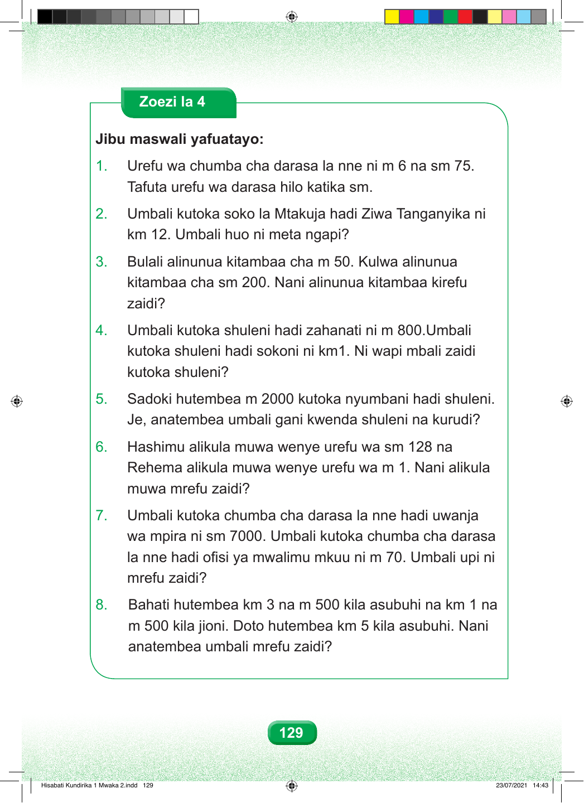

Zoezi la 4 Jibu maswali yafuatayo: 1. Urefu wa chumba cha darasa la nne ni m 6 na sm 75. Tafuta urefu wa darasa hilo katika sm. 2. Umbali kutoka soko la Mtakuja hadi Ziwa Tanganyika ni km 12. Umbali huo ni meta ngapi? 3. Bulali alinunua kitambaa cha m 50. Kulwa alinunua kitambaa cha sm 200. Nani alinunua kitambaa kirefu zaidi? 4. Umbali kutoka shuleni hadi zahanati ni m 800.Umbali kutoka shuleni hadi sokoni ni km1. Ni wapi mbali zaidi kutoka shuleni? 5. Sadoki hutembea m 2000 kutoka nyumbani hadi shuleni. Je, anatembea umbali gani kwenda shuleni na kurudi? 6. Hashimu alikula muwa wenye urefu wa sm 128 na Rehema alikula muwa wenye urefu wa m 1. Nani alikula muwa mrefu zaidi? 7. Umbali kutoka chumba cha darasa la nne hadi uwanja wa mpira ni sm 7000. Umbali kutoka chumba cha darasa la nne hadi ofisi ya mwalimu mkuu ni m 70. Umbali upi ni mrefu zaidi? 8. Bahati hutembea km 3 na m 500 kila asubuhi na km 1 na m 500 kila jioni. Doto hutembea km 5 kila asubuhi. Nani anatembea umbali mrefu zaidi? 129 Hisabati Kundirika 1 Mwaka 2.indd 129 23/07/2021 14:43